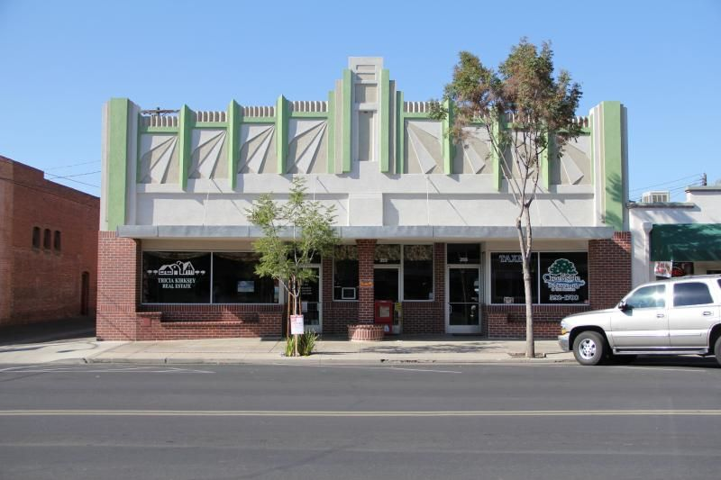
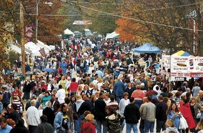

The Location and Extras
Art Depo Store

We are passionate about our mission to provide unique, quality materials at affordable prices for all artists, as well as to educate the public + help deepen their love for creating. We help educate through our extensive knowledge about the supplies we carry, through our demos and workshops presented by professional artists, and by hosting exhibitions of contemporary art by our peers and community members..
Learn more
Learn more
Apple Butter Festival

The Historical Society of Grand Rapids sponsors the annual Applebutter Fest as an event that brings people together, both from the local community and cities far and near. There are no employees; an allvolunteer force works throughout the year to coordinate this event that often hosts over 40,000 visitors. All profits are returned to the community to support nonprofit groups and local school activities, and many local nonprofits participate in the Fest to make their organization’s budget (see www.applebutterfest.org for more information). We thank all our visitors for helping make the Applebutter Fest a success!
Learn more
Learn more

(567)661-0294
anthonykalell@gmail.com